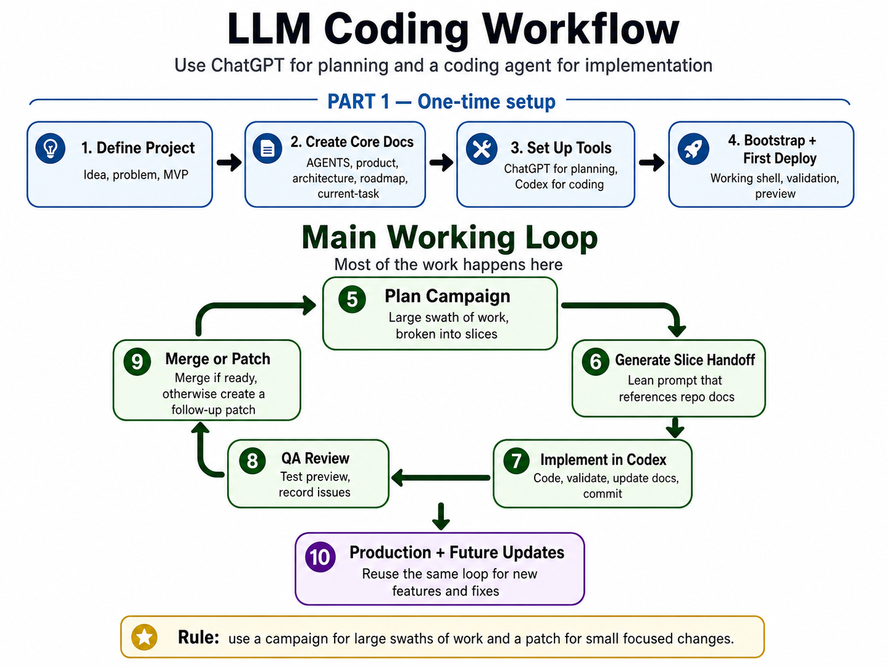

#LLM Coding Workflow Guide
A step-by-step operating guide for using a planning LLM and a coding agent to create, deploy, and maintain software projects.
Current default setup: ChatGPT for planning and Codex for implementation. The workflow is not limited to web apps. It can support personal apps, scripts, utilities, dashboards, browser games, and other software projects.
#Purpose
This document helps you create a consistent autonomous-coding infrastructure with minimal manual overhead.
The workflow assumes:
- You own product direction and final decisions.
- ChatGPT turns ideas into product plans, repo docs, campaigns, QA decisions, and Codex handoffs.
- Codex implements against the local repo, validates work, updates docs, commits, and reports back.
- GitHub and repo docs are the durable source of truth.
- Windows + PowerShell is the default local environment unless explicitly changed.
The goal is not to create perfect prompts. The goal is to create a repeatable system where every project starts with the same setup, the same documentation structure, and the same implementation loop.
#Why this workflow works
This workflow gives a hobbyist a lightweight version of a professional software process without requiring a professional software team. The core idea is controlled autonomy: LLMs do the repetitive planning, coding, documentation, and QA-support work, while the user keeps ownership of product direction, judgment, and final approval.
It works because responsibilities are separated:
- The user owns the idea, roadmap judgment, QA judgment, and merge decisions.
- ChatGPT turns rough intent into plans, campaign docs, QA triage, and coding-agent handoffs.
- Codex implements against the local repo, validates work, updates docs, commits, and reports back.
- The GitHub repo and project docs remain the durable source of truth.
This is strongest for hobbyists and solo builders who want to build real software with heavy LLM assistance while staying in control. It is less useful for tiny throwaway scripts, pure no-code app generation, or high-stakes production systems that need professional engineering review.
The main tradeoff is setup overhead. The workflow adds structure so later implementation becomes easier to resume, safer to automate, and less dependent on chat memory.
#Quick start
- Create the GitHub repo and local Windows workspace.
- Create the ChatGPT Project and add starter instructions.
- Add the compact workflow primer.
- Connect or confirm GitHub repo access for source-of-truth checks.
- Configure the Codex project and local environment.
- Define the project with ChatGPT.
- Generate and install project-specific ChatGPT instructions.
- Generate the core repo docs.
- Copy the docs into the local repo and commit/push.
- Bootstrap the project with Codex.
- Review the bootstrap and first deploy/run.
- Start the main implementation loop.
- Repeat: plan work -> generate handoff -> implement -> docs update -> QA -> merge or patch.
- Close out campaigns and start a new chat for the next phase.
Most time is spent in the implementation loop, not setup.

#Stage 0 - Create the repo and local workspace
Create a GitHub repository for the project. Use main as the default branch. Choose public or private based on the project. Add a basic .gitignore if you already know the stack; otherwise Codex can add one during bootstrap.
Clone the repo to your Windows machine. Record the project name, GitHub repo URL, local repo path, target branch, and whether the repo is public or private.
Do not commit secrets. Environment variable values belong in .env.local or platform settings, not docs.
Set-Location C:\Code
git clone {{Paste the GitHub repo URL}}
Set-Location C:\Code\{{What is the local repo folder name?}}
git status#Stage 1 - Create the ChatGPT Project
Create a ChatGPT Project for the software project before deep planning.
Use the full HTML guide as your operating manual, not as the default project source. The ChatGPT Project should receive only lightweight reusable workflow context plus app-specific instructions.
Add a starter instruction block. Later, replace or refine it with the project-specific instructions generated in Stage 4.
You are my planning partner for LLM-assisted software development.
Use the attached compact workflow primer as the generic workflow reference. Do not restate the primer unless needed.
I use ChatGPT for planning and Codex or another coding agent for implementation. The GitHub repository and repo docs are the source of truth. I remain the product owner and approve direction.
Default environment: Windows-native workflow with PowerShell. Do not assume WSL unless I explicitly request it.
When current repo state matters, inspect the project repo through the configured GitHub connector at the target branch first. If connector access is unavailable, ask me to provide only the smallest specific missing file or input. Do not rely on memory or prior chat assumptions.
Prefer step-by-step guidance, lean Codex handoffs, reviewable slices, clear stop conditions, documentation delta requirements, and clear final reports from coding agents.#Stage 1A - Add the compact workflow primer
Add the compact workflow primer to each ChatGPT Project as a source file. Do not add the full HTML guide unless you specifically want it available for reference.
Why this split exists:
- HTML guide: your day-to-day operating manual and prompt console.
- Workflow primer: lightweight reusable workflow context for ChatGPT Projects.
- Project Instructions: app-specific rules, source-of-truth routing, and output style.
- Repo docs: actual product, architecture, roadmap, and current-state truth.
This keeps ChatGPT aware of the workflow without turning every Project Instruction block into a large generic manual.
Use the primer file included in the bundle: llm-workflow-primer.md.
#Stage 1B - Configure GitHub source-of-truth access
After adding the primer, connect or confirm access to the project's GitHub repo if your ChatGPT environment supports it. The connector is not the source of truth by itself; it is the access path to the repo docs.
Record the default target branch in the Project Instructions or in your first source-of-truth check. After the project is connected to GitHub, normal prompts should clarify branch context only when needed. When current state matters, ChatGPT should inspect repo docs at the target branch before asking you to paste docs.
If connector access is unavailable, expired, or missing a file, fall back to the smallest manual paste or upload needed. Do not paste secrets or environment variable values.
Confirm GitHub source-of-truth access for this project.
Target branch for source-of-truth checks:
{{What branch should ChatGPT inspect?}}
Please verify whether you can inspect these files from the configured GitHub repo at the target branch:
- AGENTS.md
- docs/product.md
- docs/architecture.md
- docs/roadmap.md
- docs/current-task.md
- active docs/campaigns/*.md if relevant
Rules:
- Inspect the target branch before using prior chat state.
- Treat repo docs as authoritative.
- If you cannot access a needed file, ask me for only that file.
- If the branch is unmerged, do not assume main includes its changes.
- If docs conflict, stop and call out the conflict before recommending next steps.#Stage 2 - Configure Codex before handoffs
Configure Codex before any Codex handoff is created. Point Codex at the local repo path. Confirm it can see the repo, the branch is correct, Git status is clean or intentionally empty, and worktree/local environment settings are configured.
Keep worktree setup in Codex project settings or helper scripts, not in every handoff prompt.
#Stage 2A - Optional Codex worktree setup and cleanup scripts
For projects that use Codex worktrees, keep repeatable setup and cleanup logic in repo scripts instead of repeating it in every handoff.
Use setup scripts to prepare the worktree before Codex starts coding. Use cleanup scripts to remove disposable generated folders after a worktree is finished or before a fresh install.
Good setup scripts should:
- run from the repo root
- show tool versions
- fetch and prune Git refs
- stop if the worktree appears stale, detached from known branch tips, behind upstream, or diverged
- copy local-only environment files only from a user-controlled path
- validate required environment keys without printing secret values
- install dependencies using the project's package manager
- fail loudly instead of continuing with a partial environment
Good cleanup scripts should:
- remove only disposable generated folders
- never delete source files, docs, migrations, config, or local secrets
- be safe to run more than once
Keep app-specific details as variables near the top of the script.
Generic cleanup template:
$ErrorActionPreference = "Stop"
Write-Host "Running Codex cleanup script from:" (Get-Location)
$pathsToRemove = @(
".next",
"node_modules",
"coverage",
"playwright-report",
"test-results",
".vercel",
".turbo"
)
foreach ($path in $pathsToRemove) {
if (Test-Path $path) {
Write-Host "Removing disposable path: $path"
Remove-Item -Recurse -Force $path -ErrorAction SilentlyContinue
} else {
Write-Host "Not present, skipping: $path"
}
}
Write-Host "Codex cleanup complete."Generic setup template:
$ErrorActionPreference = "Stop"
# App-specific settings
$SourceEnvPath = "{{Optional path to source .env.local, or leave blank}}"
$RequiredEnvKeys = @(
"{{OPTIONAL_REQUIRED_ENV_KEY}}"
)
$RequiredRepoFiles = @(
"package.json"
)
$InstallCommand = "npm install"
Write-Host "========================================"
Write-Host "Codex Worktree Setup"
Write-Host "========================================"
Write-Host "Working directory:" (Get-Location)
Write-Host ""
Write-Host "Tool versions:"
git --version
if (Get-Command node -ErrorAction SilentlyContinue) { node -v }
if (Get-Command npm -ErrorAction SilentlyContinue) { npm -v }
if (Get-Command gh -ErrorAction SilentlyContinue) { gh --version }
Write-Host ""
Write-Host "Fetching latest Git refs..."
git fetch --all --prune
if ($LASTEXITCODE -ne 0) {
throw "Git fetch failed. Cannot verify worktree freshness."
}
$head = (git rev-parse HEAD).Trim()
if ($LASTEXITCODE -ne 0 -or [string]::IsNullOrWhiteSpace($head)) {
throw "Unable to determine current HEAD."
}
Write-Host "Current HEAD: $head"
$matchingLocalBranches = @(
git for-each-ref refs/heads --format='%(refname:short) %(objectname)' |
ForEach-Object {
$parts = $_ -split ' '
if ($parts.Length -ge 2 -and $parts[1] -eq $head) {
$parts[0]
}
}
)
$matchingRemoteBranches = @(
git for-each-ref refs/remotes --format='%(refname:short) %(objectname)' |
Where-Object { -not $_.StartsWith("origin/HEAD ") } |
ForEach-Object {
$parts = $_ -split ' '
if ($parts.Length -ge 2 -and $parts[1] -eq $head) {
$parts[0]
}
}
)
if ($matchingLocalBranches.Count -eq 0 -and $matchingRemoteBranches.Count -eq 0) {
git log --oneline --decorate -5
throw "Stopping setup: this worktree HEAD is not the current tip of any known local or remote branch after fetch."
}
foreach ($file in $RequiredRepoFiles) {
if (-not (Test-Path $file)) {
throw "Required repo file not found: $file. Run this script from the project root or update RequiredRepoFiles."
}
}
$targetEnv = Join-Path (Get-Location) ".env.local"
if (-not (Test-Path $targetEnv) -and -not [string]::IsNullOrWhiteSpace($SourceEnvPath)) {
if (-not (Test-Path $SourceEnvPath)) {
throw ".env.local missing in worktree and source path does not exist: $SourceEnvPath"
}
Copy-Item $SourceEnvPath $targetEnv -Force -ErrorAction Stop
Write-Host ".env.local copied into worktree."
}
if ($RequiredEnvKeys.Count -gt 0) {
if (-not (Test-Path $targetEnv)) {
throw ".env.local is required but missing."
}
foreach ($key in $RequiredEnvKeys) {
if ([string]::IsNullOrWhiteSpace($key) -or $key.StartsWith("{")) {
continue
}
if (-not (Select-String -Path $targetEnv -Pattern "^$key=" -Quiet)) {
throw "$key missing from .env.local"
}
}
Write-Host ".env.local validation passed."
}
if (-not [string]::IsNullOrWhiteSpace($InstallCommand)) {
Write-Host "Running dependency install command: $InstallCommand"
Invoke-Expression $InstallCommand
if ($LASTEXITCODE -ne 0) {
throw "Dependency install command failed."
}
}
Write-Host ""
Write-Host "========================================"
Write-Host "Codex environment setup complete."
Write-Host "========================================"#Stage 3 - Define the project
Paste this into the ChatGPT Project. Fill in the double-brace prompts with your project idea, constraints, and local path.
Help me define a new software project for an LLM-assisted coding workflow.
Project idea:
{{Describe the project idea in plain language}}
Why I want it:
{{Why do you want to build this?}}
Primary user:
{{Who is the primary user?}}
First useful version must do:
{{What must the first useful version do?}}
Known constraints:
{{List important constraints, assumptions, or preferences, or write "none"}}
Local repo path:
{{What is the local repo path?}}
Default environment:
Windows-native workflow with PowerShell. Do not assume WSL.
Please produce:
1. concise product brief
2. smallest sensible MVP
3. explicit non-goals
4. recommended project type
5. smallest sensible technical approach
6. likely risks and simplifications
7. whether this should proceed to repo-doc setup
8. any clarifying questions that truly block progress#Stage 4 - Generate project-specific ChatGPT instructions
Use this after the project direction is clear. Copy the generated instructions into the ChatGPT Project Instructions field.
The generated instructions should be short and app-specific. They should reference the compact workflow primer instead of duplicating it.
Create concise ChatGPT Project Instructions for this software project.
Project name:
{{What is the project name?}}
Local repo path:
{{What is the local repo path?}}
Project type:
{{What type of project is this?}}
Approved product direction:
{{Paste the approved project summary}}
Attached workflow reference:
The ChatGPT Project will include the compact LLM workflow primer as a source file. The Project Instructions should reference the primer for generic workflow rules instead of duplicating it.
Instructions architecture:
- Project Instructions should be app-specific and concise.
- The workflow primer covers campaign/slice/patch workflow, documentation freshness, documentation deltas, current-state refresh behavior, and prompt-manager placeholder style.
- Repo docs are the source of truth for product, architecture, roadmap, and current task. When connector access is available, inspect repo docs at the target branch before asking for pasted docs.
Environment:
- Default to Windows-native workflow.
- Use PowerShell command examples when needed.
- Do not assume WSL unless explicitly requested.
The instructions should include only:
1. role for this specific project
2. reference to the attached workflow primer
3. project-specific source-of-truth docs
4. current-state behavior
5. Windows/PowerShell assumption
6. concise Codex handoff style
7. project-specific guardrails and pushback rules
8. output style
Codex handoff rule:
Do not require a standard project/repository/header block by default. Codex should already have the project, repo, environment, and worktree settings configured. Include target branch, repo, or environment details only when the task needs them or when they are not obvious.
Keep the instruction block concise and purposeful. Avoid restating the full workflow primer or duplicating repo docs.#Stage 5 - Generate the core repo docs
Generate the docs that both ChatGPT and Codex will use as source of truth. These docs should be concise, not historical.
Create the initial source-of-truth repo docs for this project.
Project name:
{{What is the project name?}}
Local repo path:
{{What is the local repo path?}}
Approved product brief:
{{Paste the approved product brief}}
Approved MVP:
{{Paste the approved MVP}}
Approved technical approach:
{{Paste the approved technical approach}}
Environment assumptions:
- Windows-native workflow
- PowerShell for local commands
- ChatGPT for planning
- Codex or equivalent coding agent for implementation
- GitHub and repo docs are the durable source of truth
Please draft these files:
1. AGENTS.md
2. docs/product.md
3. docs/architecture.md
4. docs/roadmap.md
5. docs/current-task.md
Requirements:
- Keep each file concise and useful for LLM-assisted development.
- Do not include long historical narrative.
- Make docs/current-task.md point clearly to the next implementation action.
- Clearly mark anything that is planned but not implemented yet.
- Include Windows/PowerShell assumptions where relevant, but do not over-repeat them.
- Include the expectation that Codex updates docs/current-task.md after every implementation.
Output each file in a separate fenced markdown block with the file path as the heading.#Stage 6 - Add the core docs to the repo
The easiest path is manual: create the files locally in the repo folder, paste in the generated contents, then commit and push. This avoids a Codex handoff before the docs exist.
Create these files:
AGENTS.mddocs/product.mddocs/architecture.mddocs/roadmap.mddocs/current-task.md
Then run:
git status
git add AGENTS.md docs/product.md docs/architecture.md docs/roadmap.md docs/current-task.md
git commit -m "Add initial project source-of-truth docs"
git push origin main#Stage 7 - Bootstrap the project
Bootstrap creates the first working shell, validation path, and optional first deploy/run. It does not build the full MVP unless the project is tiny. Use ChatGPT to generate the Codex handoff, then paste the result into Codex.
Before creating the handoff, inspect repo docs at the target branch through the configured GitHub connector if available. If connector access is unavailable, ask for only the smallest missing doc.
Create a lean Codex-ready bootstrap handoff.
Project name:
{{What is the project name?}}
Target branch:
main
Project type:
{{What type of project is this?}}
Approved technical approach:
{{Paste the approved technical approach}}
Source-of-truth docs now in repo:
- AGENTS.md
- docs/product.md
- docs/architecture.md
- docs/roadmap.md
- docs/current-task.md
Bootstrap goal:
Create the initial working project shell, first validation path, and any minimal deploy/run setup appropriate for the project. Do not build the full MVP unless the repo docs explicitly say the project is tiny enough for that.
The Codex handoff must include:
- goal
- docs to inspect first
- readiness gate
- scope
- non-goals
- files likely to change
- acceptance criteria
- validation expectations
- documentation delta expectations
- final reporting expectations
Keep the handoff copy-paste ready.
Do not include command-by-command worktree setup unless it is required for this specific task.#Stage 8 - Review bootstrap
Review this completed bootstrap and help me decide the next step.
Branch:
{{What branch did Codex use?}}
Codex final report:
Preview, deploy, or local run result:
{{Describe the preview, deploy, or local run result}}
Manual observations:
{{Add any manual observations, or write "none"}}
Please do the following:
1. assess whether the bootstrap is complete enough to proceed
2. identify blocking setup issues
3. list what I should manually QA now
4. recommend whether to merge, patch, or hold
5. if ready, recommend the first implementation campaign or standalone slice
6. if ready, summarize what the next work item should accomplish
#Main implementation loop
Start a new ChatGPT chat at the beginning of a new campaign or major phase. Ask ChatGPT to inspect repo docs at the target branch when current state matters.
#Loop Step A - Ground a new ChatGPT chat in the repo
Use this at the start of a new ChatGPT chat, after campaign closeout, or whenever the chat context feels stale. This step is only for grounding. Do not plan new work here; use Step B or Step C for that.
I am starting a new ChatGPT chat for an existing project.
Target branch:
{{What is the target branch?}}
Please re-establish context by inspecting repo docs at the target branch:
- AGENTS.md
- docs/product.md
- docs/architecture.md
- docs/roadmap.md
- docs/current-task.md
- active docs/campaigns/*.md if relevant
Rules:
- Treat repo docs as authoritative.
- Do not rely on memory from prior chats.
- If connector access is unavailable, ask me for only the smallest missing file.
- If docs conflict, call out the conflict before recommending next steps.
After reading the docs, summarize:
1. current product direction
2. current architecture/state
3. active work item or campaign
4. next action according to docs/current-task.md
5. any doc conflicts or stale areas#Loop Step B - Plan the next work item
Use this for a campaign, a standalone slice, or a patch. Campaign planning is part of the repeatable loop, not just first-time setup.
Before planning, do a fresh source-of-truth check using repo docs at the target branch.
Work mode:
{{Which work type do you want to do? (Campaign, Single slice, or Patch)}}
Target branch:
{{What is the target branch?}}
Current objective:
{{What do you want to accomplish?}}
Additional context:
{{Anything important that is not already in repo docs, or write "none"}}
Please inspect the configured GitHub repo at the target branch, or ask me for only the smallest missing file if connector access is unavailable:
- AGENTS.md
- docs/product.md
- docs/architecture.md
- docs/roadmap.md
- docs/current-task.md
- active docs/campaigns/*.md if relevant
If Work mode is CAMPAIGN, produce a campaign document with:
1. objective and target state
2. current state and source-of-truth notes
3. scope and non-goals
4. slice plan
5. acceptance criteria per slice
6. validation and manual QA expectations
7. stop conditions and campaign completion criteria
8. follow-up backlog
If Work mode is SINGLE_SLICE, produce a concise implementation plan with:
1. goal and scope
2. non-goals
3. acceptance criteria
4. validation and docs update expectations
5. stop conditions
If Work mode is PATCH, produce a narrow patch plan with:
1. issues to fix and expected behavior
2. non-goals
3. acceptance criteria
4. validation expectations
5. risks
The plan should support large swaths when appropriate, but keep each implementation step independently reviewable.#Loop Step C - Generate the next Codex handoff
Use this for a campaign slice, standalone slice, or patch. The prompt intentionally does not ask for the repo URL because the ChatGPT Project Instructions should already contain it. Branch context still matters.
Before creating the handoff, do a fresh source-of-truth check using repo docs at the target branch.
Work type:
{{What type of handoff is this? (Campaign slice, Standalone slice, or Patch)}}
Target branch:
{{What is the target branch?}}
Active campaign doc, if applicable:
{{Paste the active campaign doc, or write "none"}}
Work item to implement:
{{What slice or patch should Codex implement?}}
Task context:
{{Add only context Codex needs beyond the repo docs, or write "none"}}
Please inspect the configured GitHub repo at the target branch, or ask me for only the smallest missing file if connector access is unavailable:
- AGENTS.md
- docs/product.md
- docs/architecture.md
- docs/roadmap.md
- docs/current-task.md
- the active campaign doc if applicable
Then create a lean Codex-ready handoff containing only what Codex needs for this task.
A normal handoff should include:
- goal
- source-of-truth docs to inspect
- readiness gate
- context specific to this task
- scope
- non-goals
- files likely to change, if useful
- acceptance criteria
- validation expectations
- documentation delta expectations
- stop conditions
- final reporting expectations
Rules:
- Do not include a standard project/repository/header block by default.
- Only mention repo, target branch, environment, or worktree details if they are not obvious or the task depends on them.
- Do not restate the entire product or campaign if the repo docs already cover it.
- Do not include command-by-command setup unless explicitly needed.
- Keep the handoff copy-paste ready.#Loop Step D - Let Codex implement
In Codex:
- Start a fresh Codex thread/worktree for each campaign slice or standalone implementation branch.
- Reuse the same branch/thread only for focused patch corrections to the same implementation.
- Paste the handoff.
- Let Codex inspect docs, implement, validate, update docs, commit, and push.
- Copy Codex's final report back into ChatGPT.
A good Codex final report must include:
- branch
- commit
- files changed
- validation results
- documentation delta
- manual QA recommendations
- known risks
#Loop Step E - QA and decide merge or patch
Help me review this completed implementation.
Branch:
{{What branch did Codex use?}}
Work type:
{{What type of work was completed? (Campaign slice, Standalone slice, or Patch)}}
Codex final report:
Preview/local test context:
{{Describe the preview or local test result}}
My rough QA notes:
{{Paste your rough QA notes}}
Please do the following:
1. assess whether the work appears aligned with the campaign, roadmap, or slice plan
2. clean up my QA notes into clear issues
3. classify each issue as blocker, follow-up patch, campaign backlog, later, or reject
4. identify what should change before merge, if anything
5. tell me exactly what to manually QA
6. recommend one of: merge, narrow patch, revise plan/campaign, or abandon branch
7. if a patch is needed, create a lean Codex-ready patch handoff
#Loop Step F - Patch when needed
Create a narrow Codex-ready patch handoff.
Branch to patch:
{{What branch should Codex patch?}}
Issues to fix:
{{List the issues this patch should fix}}
Additional context:
{{Anything Codex needs that is not already in repo docs, or write "none"}}
Please inspect repo docs at the target branch if current state matters. Then generate a concise patch handoff with:
1. goal
2. source-of-truth docs to inspect
3. scope
4. non-goals
5. acceptance criteria
6. validation expectations
7. documentation delta expectations
8. final reporting expectations
Rules:
- Only fix the listed issues.
- Do not redesign adjacent flows.
- Do not start the next campaign slice unless explicitly requested.
- Do not change schema/auth/deployment unless required and reported first.
- Do not rewrite unrelated code.
Final report must include:
- branch
- commit
- files changed
- validation results
- documentation delta
- manual QA recommendations
- remaining risks or follow-ups
Keep this handoff short and copy-paste ready.#Loop Step G - Close the campaign or phase
When a campaign or major phase is complete, close it out, update docs, and usually start a new ChatGPT chat for the next campaign or phase.
Help me close out this work item and prepare the project for the next stage.
Target branch:
{{What is the target branch?}}
Work item to close:
{{Which campaign, slice, patch, or phase is being closed out?}}
Known remaining issues:
{{List anything I already know, or write "none"}}
Please do a fresh source-of-truth check using repo docs at the target branch. If connector access is unavailable, ask me for only the smallest missing file from:
- AGENTS.md
- docs/product.md
- docs/architecture.md
- docs/roadmap.md
- docs/current-task.md
- active campaign doc if relevant
Then recommend:
1. whether the work item appears complete
2. what docs should be updated
3. what old context should be archived or removed from the hot path
4. what docs/current-task.md should say next
5. whether the next step should be a patch, new campaign, standalone slice, production hardening, or pause
6. whether I should start a new ChatGPT chat for the next phase
7. a Codex-ready docs-update handoff if needed#Documentation freshness system
Use docs/current-task.md as the active work pointer for current status and next action.
Codex must update docs/current-task.md after every implementation. Update campaign docs when slice status changes. Update architecture or roadmap docs only when the work changes architecture, routes, services, deployment, milestone status, scope, or sequencing.
ChatGPT should use the configured GitHub connector to inspect repo docs at the target branch whenever current state matters. Chat memory and prior final reports are orientation only; repo docs are authoritative.
#Documentation delta
Every Codex final report should include:
Documentation delta:
- docs/current-task.md: {{Summarize what changed in docs/current-task.md}}
- campaign doc, if applicable: {{Summarize what changed, or write "not applicable"}}
- docs/architecture.md: {{Summarize what changed, or write "not applicable"}}
- docs/roadmap.md: {{Summarize what changed, or write "not applicable"}}#Docs health check
Run a docs health check after a campaign, before a major campaign, or whenever docs seem stale. Do not make this a weekly chore unless the project is moving quickly.
Create a Codex-ready docs health check handoff.
Target branch:
{{What is the target branch?}}
Reason for audit:
{{Why are you running this docs health check?}}
Goal:
Audit and update project documentation so the hot-path docs accurately reflect the current project state.
Read first from repo docs at the target branch:
- AGENTS.md
- docs/product.md
- docs/architecture.md
- docs/roadmap.md
- docs/current-task.md
- active docs/campaigns/*.md if relevant
- recent git history
Scope:
Documentation only. Do not implement app features.
Tasks:
1. Identify stale, conflicting, or bloated docs.
2. Update docs/current-task.md so it reflects current status and next action.
3. Update active campaign doc if slice/campaign status is stale.
4. Update docs/architecture.md only if architecture changed.
5. Update docs/roadmap.md only if roadmap status changed.
6. Move obsolete context to archive only when clearly no longer active.
7. Preserve useful historical context, but remove it from the hot path.
Validation:
- Confirm docs agree on active campaign or active work item.
- Confirm current status and next action are clear.
- Report uncertainty instead of guessing.
Final report:
- docs changed
- conflicts found and resolved
- conflicts still unresolved
- recommended next action#Current-state protocol
Use this whenever ChatGPT might be stale.
Before answering, do a fresh source-of-truth check for this project.
Current situation:
{{Briefly describe why you need a source-of-truth check}}
Target branch:
{{What is the target branch?}}
Please inspect repo docs at the target branch for the latest versions of:
- AGENTS.md
- docs/product.md
- docs/architecture.md
- docs/roadmap.md
- docs/current-task.md
- active docs/campaigns/*.md if relevant
Rules:
- Do not rely on memory or prior chat assumptions.
- Treat repo docs as authoritative.
- If connector access is unavailable or a file is missing, ask me to paste or upload only the specific missing files.
- If the branch is unmerged, do not assume main includes the branch changes.
- If docs conflict, call out the conflict before making recommendations.
After the source-of-truth check, answer my request:
{{What do you want ChatGPT to answer or help with?}}#Operating rules
- The repo is the durable memory. Chats are temporary.
- Codex owns doc freshness during implementation.
docs/current-task.mdmust be updated after every implementation.- Every Codex final report must include a documentation delta.
- Keep hot context small:
AGENTS.md, product, architecture, roadmap, current-task, and the active campaign doc. - Use campaigns for large swaths of work and patches for narrow fixes.
- Configure ChatGPT, GitHub repo access, and Codex before relying on them.
- Inspect repo docs through the configured GitHub connector before asking for pasted docs when current state matters.
- Use Windows + PowerShell by default.
- Keep Codex worktree setup in Codex configuration or helper scripts, not normal handoffs.
- Stop when docs conflict.
- Archive old handoffs, obsolete campaign docs, long slice logs, and stale instructions.
#Appendix A - ChatGPT Project workflow primer
This is the compact Markdown file to add to individual ChatGPT Projects. It gives the project the reusable workflow rules without uploading the full guide.
# LLM Coding Workflow Primer
Use this compact primer as reference material inside each ChatGPT Project. Keep the full HTML guide as the day-to-day operating manual.
## Core workflow
Use ChatGPT for planning, roadmap decisions, QA triage, and coding-agent handoffs. Use Codex or another coding agent for repo-based implementation. The user remains the product owner and approves direction, QA, and merge decisions.
The repository is the durable memory. Chat history is temporary.
## Default environment
Assume a Windows-native workflow with PowerShell unless the user explicitly says otherwise. Do not assume WSL. Use Windows paths such as `C:\Code\ProjectName` when examples are needed.
## Source-of-truth docs
When current state matters, inspect the project repo through the configured GitHub connector at the target branch first. If connector access is unavailable, ask for only the smallest missing file or doc needed to continue.
Core docs to inspect:
- `AGENTS.md`
- `docs/product.md`
- `docs/architecture.md`
- `docs/roadmap.md`
- `docs/current-task.md`
- active `docs/campaigns/*.md` files when relevant
Do not rely on memory or prior chat assumptions when repo state matters. If docs conflict, call out the conflict before recommending next steps.
## Implementation loop
Use the same loop for most work:
1. Refresh current state from repo docs on the target branch.
2. Plan a campaign, slice, or patch.
3. Generate a lean Codex handoff.
4. Codex implements, validates, updates docs, commits, and reports back.
5. The user QA reviews the preview/local result.
6. Merge, patch, revise the campaign, or stop.
Use a campaign for a large swath of related work. Use a slice for one independently reviewable unit of implementation. Use a patch for a narrow correction.
## Codex handoff expectations
Codex handoffs should include:
- goal
- source-of-truth docs to inspect
- readiness gate
- scope
- non-goals
- files likely to change
- acceptance criteria
- validation expectations
- documentation expectations
- stop conditions
- final reporting expectations
Do not restate all project context when the repo docs already contain it. Keep handoffs copy-paste ready.
## Documentation freshness
Codex owns documentation freshness during implementation. Every implementation should update `docs/current-task.md`. Update campaign docs when slice status changes. Update architecture or roadmap docs only when the work changes architecture, routes, services, deployment, milestone status, scope, or sequencing.
Every Codex final report should include a documentation delta that says which docs changed and why.
ChatGPT should inspect repo docs at the target branch whenever current state matters. Prior chat context and final reports are orientation only; repo docs remain authoritative.
## ChatGPT behavior
Start with the recommendation. Focus on what the user should do next. Prefer reviewable slices. Use the configured GitHub connector before asking for pasted docs when current state matters. Push back on unclear scope, overengineering, generic product drift, stale docs, and unnecessary AI dependencies.#Appendix B - Key terms
- Planning LLM: The conversational model used for strategy, planning, QA triage, and handoff generation. In this workflow, ChatGPT.
- Coding agent: The tool that works directly in the repo to edit files, run checks, commit, and push. In this workflow, Codex.
- Source-of-truth docs: The repo docs that define current product, architecture, roadmap, and active work.
- Hot context: The small set of files an agent should read for the current task.
- Campaign: A large swath of related work broken into reviewable slices.
- Slice: One independently reviewable implementation unit inside a campaign or standalone effort.
- Patch: A narrow correction to a specific branch or issue.
- Bootstrap: The first implementation run that creates the working shell, validation path, and initial deploy/run setup.
- Readiness gate: The pre-coding check that confirms docs, branch, and scope agree.
- Documentation delta: The final-report section explaining which docs changed and why.
- Docs health check: A docs-only audit to align current-task, roadmap, architecture, and campaign status.
- Source-of-truth check: A deliberate refresh using repo docs at the target branch before planning, handoffs, QA, or strategy decisions.
- Prompt manager: A saved-prompt library for reusable prompts. It reduces typing, but does not replace repo docs or project instructions.
- Worktree: A separate working directory connected to the same Git repo, useful for isolated branches.
#Appendix C - Standard repo docs
Use this default structure:
AGENTS.md
docs/product.md
docs/architecture.md
docs/roadmap.md
docs/current-task.md
docs/campaigns/
docs/archive/ optional
docs/qa/ optional#Appendix D - Codex worktrees
Worktrees isolate implementation branches from the main checkout.
Use worktrees when starting a campaign slice, starting a patch branch, comparing branches, keeping main clean, or avoiding stale local state.
Suggested rules:
- one worktree per active implementation branch
- remove old worktrees after merge or abandonment
- use a freshness gate script so worktrees start from the latest remote branch
- keep worktree setup in Codex local environment configuration or helper scripts
Setup sequence:
- Keep the main repo at a stable path such as
C:\Code\ProjectName. - Configure Codex to use that repo.
- Configure Codex local environment setup with a PowerShell setup script.
- Configure cleanup with a conservative cleanup script.
- Use one worktree per implementation branch.
- After merge, remove the worktree.
Common commands:
git worktree list
git worktree add ..\myapp-slice-1 -b codex\slice-1 origin/main
git worktree remove ..\myapp-slice-1#Appendix E - Common PowerShell commands
#Navigation
Use these to move around your local Windows workspace.
Get-Location
Set-Location C:\Code\MyApp
Get-ChildItem#Git status and freshness
Use these before starting work or when debugging branch state.
git status
git fetch --all --prune
git branch
git checkout main
git pull origin main#Commit and push
Use these after making local doc changes or manual edits.
git add .
git commit -m "Your commit message"
git push#Local development
Use these for Node/Next-style projects. Adjust for your stack.
npm install
npm run dev
npm run build
npm run lint
npm test#Clean generated files
Use these to remove generated build output when needed.
Remove-Item -Recurse -Force .next
Remove-Item -Recurse -Force node_modules#Appendix F - Advanced option: docs/project-state.json
The default workflow does not require docs/project-state.json.
Most projects should use:
docs/current-task.md- Codex documentation delta
Add docs/project-state.json only when:
- multiple campaigns are active or queued
- ChatGPT frequently struggles to identify active state
- the project has many branches or environments
docs/current-task.mdis getting too long- you are building tooling around this workflow
If you add it, keep it as a machine-readable pointer, not a narrative doc.
{
"project": "Project Name",
"sourceOfTruthUpdated": "YYYY-MM-DD",
"targetBranch": "main",
"activeCampaign": "docs/campaigns/example.md",
"activeSlice": "Slice 2 - Example",
"lastCompletedBranch": "codex/example-branch",
"lastCompletedCommit": "abc123",
"currentStatus": "awaiting manual QA",
"nextAction": "QA preview, then decide merge or patch",
"docsToInspect": [
"AGENTS.md",
"docs/product.md",
"docs/architecture.md",
"docs/roadmap.md",
"docs/current-task.md"
]
}If this file exists, update Codex handoffs with this extra line:
- Inspect docs/project-state.json after docs/current-task.md and report any mismatch.Do not add this file unless the project is complex enough to justify another maintained state artifact.
#Appendix H - Prompt Manager Setup
Use this workflow guide together with Awesome Prompts: Prompt Manager for ChatGPT, Claude, Gemini & Perplexity when you frequently reuse the same ChatGPT prompts.
This guide’s prompt placeholders are intentionally formatted for that extension, but they use plain-language fill-ins instead of terse variable names:
{{What is the project name?}}
{{What is the target branch?}}
{{Paste the Codex final report}}
{{Paste your rough QA notes}}Extension URL:
https://chromewebstore.google.com/detail/awesome-prompts-prompt-ma/fkdmcmcfifcfliohhcocpmnoiimcijdl#Why use the prompt manager
Use the extension for saved prompts you reuse often, such as current-state refresh, campaign planning, Codex handoff generation, QA cleanup, and docs health checks.
Keep the HTML guide as the full operating manual. Keep the prompt manager as your quick-access prompt library.
#Suggested placeholder style
Use short, plain-language questions inside the double braces. The placeholder should tell you exactly what to paste without making you remember a variable name.
{{What is the project name?}}
{{What is the local repo path?}}
{{What is the target branch?}}
{{Paste the active campaign doc, or write "none"}}
{{Which work type do you want to do? (Campaign, Single slice, or Patch)}}
{{What slice or patch should Codex implement?}}
{{Paste the Codex final report}}
{{Describe the preview or local test result}}
{{Paste your rough QA notes}}
{{List the issues this patch should fix}}
{{What validation should Codex run or report?}}
{{What do you want ChatGPT to help with?}}#How to save prompts
- Copy a prompt from the HTML guide.
- Save it in Awesome Prompts.
- Keep the
{{Plain-language prompt question}}placeholders intact. - Group prompts by workflow stage.
- When using a prompt, fill only the variables needed for that situation.
- Do not add broad app context if the ChatGPT Project Instructions and repo docs already contain it.
#Recommended prompt groups
Organize saved prompts into these groups:
- Project setup
- Current-state refresh
- Campaign planning
- Codex handoff generation
- QA review
- Patch handoff
- Docs health check
#Rule
A prompt manager should reduce typing, not replace source-of-truth docs. Keep app-specific truth in the repo docs and ChatGPT Project Instructions.
#Appendix I - Minimal Codex handoff shape
This shape is for a normal Codex handoff when Codex is already configured for the project repo and environment.
Do not add a standard project/repository/header block by default. Add branch, repo, or environment details only when the task depends on them or they are not obvious.
Goal:
{{What should Codex accomplish?}}
Read first:
- AGENTS.md
- docs/product.md
- docs/architecture.md
- docs/roadmap.md
- docs/current-task.md
- active campaign doc, if applicable: {{What is the active campaign doc path, or write "not applicable"?}}
Readiness gate:
Before coding, confirm the source-of-truth docs from the target branch agree on the active task. Stop and report any conflict.
Context:
{{Add only context Codex needs beyond the repo docs, or write "none"}}
Scope:
{{What is in scope for this handoff?}}
Non-goals:
- {{What is intentionally out of scope?}}
Acceptance criteria:
- {{What must be true for this to be accepted?}}
Validation:
- Run relevant checks.
- Report command results.
- If a check cannot run, explain why.
Docs and state:
- Update docs/current-task.md after completion.
- Update campaign/architecture/roadmap docs only if needed.
- Include a documentation delta in the final report.
Stop conditions:
- {{When should Codex stop and report instead of continuing?}}
Final report:
- Branch
- Commit
- Files changed
- Validation results
- Documentation delta
- Manual QA recommendation
- Follow-up risks